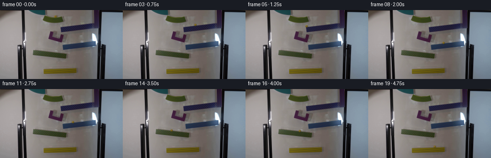
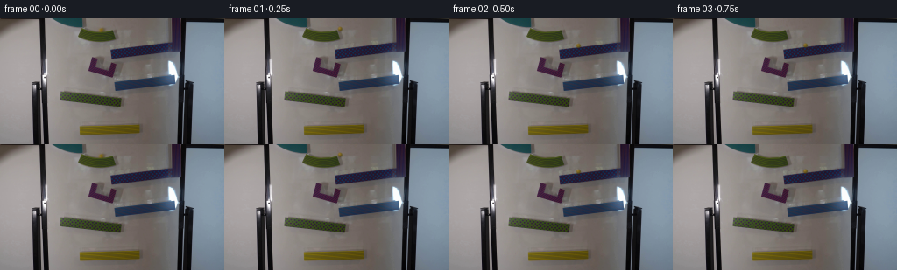

CODING AGENTS AS PIXEL WORLD MODELS
traex/GPT-6.1-Sol · 0104
点击播放 · 原生 RGB 像素
逐轮保存的候选
回放视频、检查图与代码变化。
每份候选均可单独播放。实际图片检查记录在下方工具轨迹中。
候选 01播放与检查图
点击播放 · 原生 RGB 像素


展开代码变化
--- 上一保存版本
+++ 本次保存版本
@@ -0,0 +1,227 @@
+from pathlib import Path
+import math
+
+import numpy as np
+from PIL import Image
+from scipy.interpolate import CubicHermiteSpline
+from scipy.ndimage import gaussian_filter
+from scipy.optimize import brentq
+
+import artifact_io
+
+
+ROOT = Path(__file__).resolve().parent
+G = 2000.0
+R = 2.4
+
+
+class Motion:
+ def __init__(self):
+ self.parts = []
+ self.t = 0.0
+
+ def add(self, duration, function, name):
+ self.parts.append((self.t, self.t + duration, function, name))
+ self.t += duration
+
+ def at(self, time):
+ for a, b, function, _ in self.parts:
+ if time <= b:
+ return np.asarray(function(max(0.0, time - a)), dtype=float)
+ return np.asarray(self.parts[-1][2](time - self.parts[-1][0]), dtype=float)
+
+
+def fall(motion, start, velocity, surface, name):
+ x, y = start
+ vx, vy = velocity
+ duration = brentq(
+ lambda t: y + vy*t + .5*G*t*t - surface(x + vx*t),
+ .00001, .6,
+ )
+ motion.add(duration, lambda t: (x + vx*t, y + vy*t + .5*G*t*t), name)
+ return (x + vx*duration, surface(x + vx*duration)), (vx, vy + G*duration)
+
+
+def incline(motion, start, velocity, slope, end, name, loss=1.0):
+ # Horizontal parameterization of solid-sphere rolling down an incline.
+ x, y = start
+ vx, vy = velocity
+ v = loss*(vx + slope*vy)/(1.0 + slope*slope)
+ a = (5.0/7.0)*G*slope/(1.0 + slope*slope)
+ roots = np.roots([.5*a, v, x-end])
+ duration = min(float(t.real) for t in roots if abs(t.imag) < 1e-5 and t.real > 0)
+ motion.add(duration, lambda t: (x + v*t + .5*a*t*t,
+ y + slope*(v*t + .5*a*t*t)), name)
+ out_v = v + a*duration
+ return (end, y + slope*(end-x)), (out_v, slope*out_v)
+
+
+def make_motion():
+ m = Motion()
+ # First, the marble traverses the short, curved green launch trough.
+ times = np.array([0., .060, .135, .225])
+ pts = np.array([[115.25, 13.15], [118.95, 13.25],
+ [123.15, 12.85], [129.6, 11.75]])
+ deriv = np.array([[65., 4.], [59., -1.], [62., -10.], [85., -32.]])
+ spline = CubicHermiteSpline(times, pts, deriv)
+ m.add(times[-1], lambda t: spline(t), 'top green')
+
+ blue1 = lambda x: 35.5 - .115*(x-128.) - R
+ p, v = fall(m, pts[-1], (85., -32.), blue1, 'first drop')
+ p, v = incline(m, p, v, -.115, 127.7, 'upper blue')
+
+ # The short purple U-trough receives the marble from the left-running
+ # blue rail, turns it, and releases it from its raised right-hand lip.
+ cup_surface = lambda x: 55.2 + .23*(x-113.)
+ p, v = fall(m, p, v, cup_surface, 'drop into purple')
+ tt = np.array([0., .063, .155, .237, .305])
+ pp = np.array([p, [108.0, 53.9], [115.5, 55.7],
+ [124.5, 56.65], [129.7, 48.5]])
+ dd = np.array([[v[0], 32.], [0., 0.], [108., 24.],
+ [84., -25.], [105., -66.]])
+ sp = CubicHermiteSpline(tt, pp, dd)
+ m.add(tt[-1], lambda t: sp(t), 'purple turnaround')
+
+ blue2 = lambda x: 73.2 - .110*(x-132.) - R
+ p, v = fall(m, pp[-1], (105., -66.), blue2, 'second drop')
+ p, v = incline(m, p, v, -.110, 131.2, 'lower blue')
+
+ green = lambda x: 85.5 + .108*(x-74.) - R
+ p, v = fall(m, p, v, green, 'drop onto long green')
+ p, v = incline(m, p, v, .108, 137.0, 'long green')
+
+ yellow = lambda x: 123.0 - .016*(x-95.) - R
+ p, v = fall(m, p, v, yellow, 'final drop')
+ # The final yellow receiving trough has a closed right lip. A small
+ # rebound there leaves the ball rolling left along the almost-level rail.
+ slope = -.016
+ vx = (v[0] + slope*v[1])/(1+slope*slope)
+ right = 156.0
+ if p[0] < right:
+ d = (right-p[0])/max(vx, 1.)
+ x0, y0 = p
+ m.add(d, lambda t: (x0+vx*t, y0+slope*vx*t), 'yellow right lip')
+ p = (right, yellow(right))
+ else:
+ p = (right, yellow(right))
+ rebound = (-.62*abs(vx), .016*.62*abs(vx))
+ p, v = incline(m, p, rebound, -.016, 91.7, 'yellow finish')
+ x0, y0 = p
+ vx, vy = v
+ m.add(2., lambda t: (x0+vx*t, y0+vy*t+.5*G*t*t), 'out of frame')
+ return m
+
+
+def clean_start(image):
+ """Reconstruct only the six-pixel marble and its contact shadow.
+
+ The underlying whiteboard and green rim are estimated from neighbouring
+ samples at the same height; no scene-wide resampling is performed.
+ """
+ clean = image.astype(float).copy()
+ # Each row's unoccluded board/rim pixels bracket the marble. The curved
+ # edge is locally shallow, so a row interpolation retains the dark lip.
+ for y in range(9, 16):
+ left = image[y, 108:111].astype(float).mean(axis=0)
+ right = image[y, 122:125].astype(float).mean(axis=0)
+ for x in range(110, 123):
+ q = (x-109.)/14.
+ new = (1-q)*left + q*right
+ # Smooth, tight reconstruction footprint around the photographed
+ # marble, including the small shadow to its right.
+ rr = math.sqrt(((x-115.8)/5.4)**2 + ((y-12.8)/3.4)**2)
+ a = np.clip((1.18-rr)/.30, 0., 1.)
+ clean[y, x] = clean[y, x]*(1-a) + new*a
+ return clean
+
+
+def marble_patch(background, position, velocity, phase):
+ # Local supersampling avoids changing the original board texture.
+ x, y = position
+ if x < -6 or x > 262 or y < -6 or y > 150:
+ return background
+ margin = 7
+ x0, y0 = max(0, int(x)-margin), max(0, int(y)-margin)
+ x1, y1 = min(256, int(x)+margin+2), min(144, int(y)+margin+2)
+ if x1 <= x0 or y1 <= y0:
+ return background
+ S = 6
+ yy, xx = np.mgrid[y0*S:y1*S, x0*S:x1*S].astype(float)
+ xx = (xx+.5)/S-.5
+ yy = (yy+.5)/S-.5
+ local = background[y0:y1, x0:x1]
+ alpha_sum = np.zeros(xx.shape, float)
+ color_sum = np.zeros((*xx.shape, 3), float)
+ shadow_sum = np.zeros(xx.shape, float)
+ # A short real-time camera exposure: only a fraction of a marble diameter
+ # of blur, not an artificial streak following the 4fps sampling interval.
+ vx, vy = velocity
+ for dt in np.linspace(-1/180, 1/180, 5):
+ cx, cy = x+vx*dt, y+vy*dt
+ dx, dy = (xx-cx)/R, (yy-cy)/R
+ r2 = dx*dx + dy*dy
+ z = np.sqrt(np.maximum(0., 1-r2))
+ alpha = np.clip((1-np.sqrt(r2))*S*R+.5, 0., 1.)
+ # Amber glass with board-coloured transmitted light at the perimeter.
+ lighting = np.clip(.69*z-.35*dx-.44*dy, 0., 1.)
+ color = np.zeros((*xx.shape, 3), float)
+ color[:] = [83., 71., 19.]
+ color += lighting[..., None]*np.array([60., 43., 24.])
+ # A subdued moving internal yellow vein makes rotation visible without
+ # changing the spherical silhouette or adding an opaque painted stripe.
+ angle = phase*.37
+ strand = np.exp(-((dx*math.cos(angle)+dy*math.sin(angle)-.17)/.18)**2)
+ strand *= z*z
+ color += strand[..., None]*np.array([7., 5., -4.])
+ glint = np.exp(-((dx+.34)**2/.06+(dy+.38)**2/.065))
+ color += glint[..., None]*np.array([26., 25., 22.])
+ rim = np.clip((np.sqrt(r2)-.79)/.21, 0, 1)
+ color = color*(1-.13*rim[..., None])
+ # Very soft shadow, displaced away from the upper-left room lighting.
+ shadow = .12*np.exp(-(((xx-cx-.9)/2.9)**2+((yy-cy-1.35)/1.8)**2)*1.35)
+ alpha_sum += alpha/5
+ color_sum += color*alpha[..., None]/5
+ shadow_sum += shadow/5
+ # Match the low-resolution lens softness of the original glass marble.
+ alpha_sum = gaussian_filter(alpha_sum, .38*S)
+ color_sum = gaussian_filter(color_sum, (.38*S, .38*S, 0))
+ shadow_sum = gaussian_filter(shadow_sum, .38*S)
+ h, w = y1-y0, x1-x0
+ def down(a):
+ if a.ndim == 2:
+ return a.reshape(h, S, w, S).mean((1,3))
+ return a.reshape(h, S, w, S, 3).mean((1,3))
+ a = down(alpha_sum)
+ c = down(color_sum)
+ sh = down(shadow_sum)
+ rendered = local*(1-sh[..., None])*(1-a[..., None]) + c
+ result = background.copy()
+ result[y0:y1, x0:x1] = rendered
+ return result
+
+
+def main():
+ first = np.asarray(Image.open(ROOT/'first_frame.png').convert('RGB'))
+ background = clean_start(first)
+ motion = make_motion()
+ frames = [first.copy()]
+ trace = []
+ for i in range(1, 20):
+ t = i/4
+ p = motion.at(t)
+ v = (motion.at(t+.0001)-motion.at(t-.0001))/.0002
+ frame = marble_patch(background, p, v, t*38.)
+ frames.append(np.clip(np.rint(frame), 0, 255).astype(np.uint8))
+ trace.append((i, t, *p, *v))
+ frames = np.stack(frames)
+ assert np.array_equal(frames[0], first)
+ np.save(ROOT/'.tmp'/'trajectory.npy', np.array(trace))
+ for start, end, _, name in motion.parts:
+ print(f'{start:.3f}--{end:.3f}: {name}')
+ for row in trace:
+ print('frame %02d t %.2f xy (%.2f, %.2f) velocity (%.2f, %.2f)' % row)
+ artifact_io.save(frames, ROOT)
+
+
+if __name__ == '__main__':
+ main()
可观测工具轨迹
实际执行的命令与返回图片。
命令 1exit 0
/bin/bash -lc 'ls -la && cat prompt.txt && cat GENERATION_RULES.md'
命令 2exit 0
/bin/bash -lc "cat artifact_io.py && python - <<'PY'
from PIL import Image
import numpy as np
im=np.array(Image.open('first_frame.png')); print(im.shape)
for y in range(0,144,3):
s=''
for x in range(0,256,3):
r,g,b=im[y:y+3,x:x+3].mean((0,1));
if r>180 and g>170 and b>150: c=' '
elif r>150 and g>110 and b<120:c='Y'
elif r>140 and r>g*1.3 and r>b*1.3:c='R'
elif g>r*1.2 and g>b*1.1:c='G'
elif b>r*1.2 and b>g*1.1:c='B'
elif max(r,g,b)-min(r,g,b)<30: c='.' if r>120 else ('+' if r>70 else '#')
else:c='x'
s+=c
print(f'{y:03d} {s}')
PY"命令 3exit 0
/bin/bash -lc "python - <<'PY'
import numpy as np
from PIL import Image
from collections import Counter
im=np.array(Image.open('first_frame.png'))
print(Counter(map(tuple, (im//24*24).reshape(-1,3))).most_common(35))
for y in range(0,145,8):
if y>=144:continue
print(y, [(x,tuple(im[y,x])) for x in range(0,256,16)])
# saturated yellows, oranges
mask=(im[:,:,0]>120)&(im[:,:,1]>85)&(im[:,:,2]<im[:,:,1]*.72)&(im[:,:,1]>im[:,:,0]*.60)
ys,xs=np.where(mask)
print('yellow',len(xs),'bbox', (xs.min(),ys.min(),xs.max(),ys.max()) if len(xs) else None)
print(list(zip(xs,ys))[:300])
PY"命令 4exit 0
/bin/bash -lc "python - <<'PY'
from PIL import Image
import numpy as np
im=np.array(Image.open('first_frame.png')).astype(float)
# per-pixel symbolic colors
for (x0,y0,x1,y1) in [(52,0,144,32),(100,26,205,86),(66,82,150,107),(86,118,153,136)]:
print('\\nCROP',x0,y0,x1,y1);print(' '+''.join(str(x//10%10) for x in range(x0,x1)));print(' '+''.join(str(x%10) for x in range(x0,x1)))
for y in range(y0,y1):
s=''
for x in range(x0,x1):
r,g,b=im[y,x]
if r>125 and g>85 and b<g*.7 and g>r*.55:c='Y'
elif g>r+6 and g>b+8 and g>40:c='G'
elif b>r+8 and b>g+7:c='B'
elif r>g+13 and b>g+9:c='P'
elif max(r,g,b)<45:c='#'
elif r>g+15 and r>b+12:c='r'
else:c=' ' if (r+g+b)>410 else ('.' if (r+g+b)>320 else ('o' if (r+g+b)>220 else ':'))
s+=c
print(f'{y:03d} '+s)
PY"命令 5exit 0
/bin/bash -lc "python - <<'PY'
from PIL import Image
import numpy as np
A=np.array(Image.open('first_frame.png'))
print('ball region pixels RGB')
for y in range(8,19):
print(y, ' '.join(f'{x}:{tuple(A[y,x])}' for x in range(109,122)))
# boundaries of all major colorful objects rowwise
for y in range(0,136):
if y%2:continue
m=A[y].astype(float);r,g,b=m.T
groups={'green':(g>r+7)&(g>b+10)&(g>40),'blue':(b>r+15)&(b>g+15)&(r<80),'purple':(r>g+13)&(b>g+10)&(r<110)}
print(y,end=' ')
for k,mask in groups.items():
xs=np.where(mask[55:205])[0]+55
if len(xs):print(k, (int(xs.min()),int(xs.max()),len(xs)),end='; ')
print()
PY"命令 6exit 0
/bin/bash -lc "python - <<'PY'
import numpy as np
from PIL import Image
im=np.array(Image.open('first_frame.png')).astype(float)
for y in [12,13,14,15,16,17,18,19,20,21,22,23,24,25,26,27,28,29,30,31,32,33,34,35,36,37,38,39,40,41,42,43,44,45,46,47]:
print(y, ' '.join('%d:%d/%d/%d'%(x,*im[y,x]) for x in range(88,137,4)))
PY"命令 7exit 0
/bin/bash -lc "python - <<'PY'
import numpy as np
from PIL import Image
A=np.array(Image.open('first_frame.png')).astype(float)
# find colored upper and lower edge by column for ramps
for name,xr,yr,mode in [('top',(89,134),(10,29),'green'),('upper_blue',(125,206),(22,47),'blue'),('purple',(100,134),(42,69),'purple'),('lower_blue',(129,205),(62,85),'blue'),('lower_green',(67,143),(82,104),'green'),('yellow',(88,157),(113,135),'yellow')]:
print(name)
for x in range(*xr,3):
r,g,b=A[yr[0]:yr[1],x].T
if mode=='green':m=(g>r+5)&(g>b+10)&(g<110)
elif mode=='blue':m=(b>r+8)&(b>g+12)&(r<80)
elif mode=='purple':m=(r>g+10)&(b>g+8)&(r<100)
else:m=(r>b+35)&(g>b+35)&(g<120)
ys=np.where(m)[0]+yr[0]
if len(ys):print(x,int(ys.min()),int(ys.max()),end=';')
print()
PY"命令 8exit 0
/bin/bash -lc "python - <<'PY'
import numpy as np
from PIL import Image
A=np.array(Image.open('first_frame.png')).astype(int)
for x in range(80,191):
r,g,b=A[117:137,x].T
ys=np.where((r-b>35)&(g-b>35))[0]+117
if len(ys):print(x,ys.min(),ys.max(),end=';')
print()
for x in [138,140,142,144,146,148,150,152,154,156,158,160,162]:
print(x,[tuple(A[y,x]) for y in [119,120,121,122,123,124,125,126,127,128,129,130]])
PY"命令 9exit 0
/bin/bash -lc "python - <<'PY' import importlib.util for s in ['cv2','scipy','numpy','PIL']: print(s, bool(importlib.util.find_spec(s))) PY"
命令 10exit 0
/bin/bash -lc 'python generate.py'
命令 11exit 0
/bin/bash -lc "python - <<'PY'
from PIL import Image
import numpy as np
from pathlib import Path
A=np.array(Image.open('first_frame.png'))
B=np.array(Image.open('frames/19.png'))
D=np.max(abs(B.astype(int)-A.astype(int)),axis=2)
print('shape',B.shape,'old marble region after cleanup:')
for y in range(10,16):
print(y, ['%d/%d/%d'%tuple(B[y,x]) for x in range(111,121)])
for i in [1,2,6,13,18,19]:
b=np.array(Image.open(f'frames/{i:02d}.png'))
diff=np.max(abs(b.astype(int)-A.astype(int)),2)
ys,xs=np.where(diff>2)
print(i,'changed',len(xs),'bbox',(xs.min(),ys.min(),xs.max(),ys.max()))
print('pixel range',b.min(),b.max())
print('files', [(p.name,p.stat().st_size) for p in Path('.').iterdir() if p.is_file()])
P=np.load('pixels.npz')['pixels'];print('packed',P.shape,P.dtype)
PY"保存候选 1 份；完成命令 11 次；可验证图片返回 0 张。原始 API 响应与完整日志保留在本地。